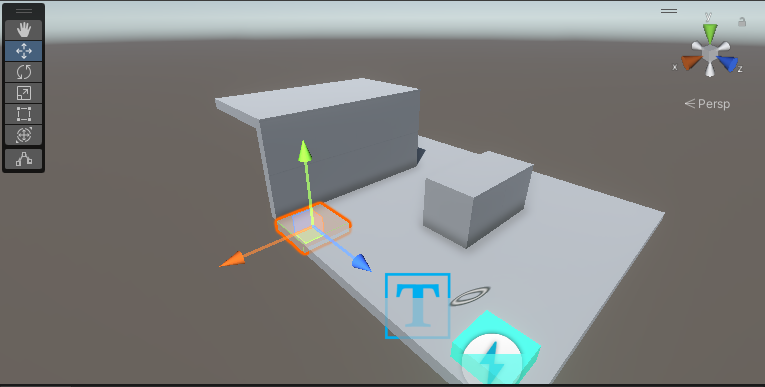
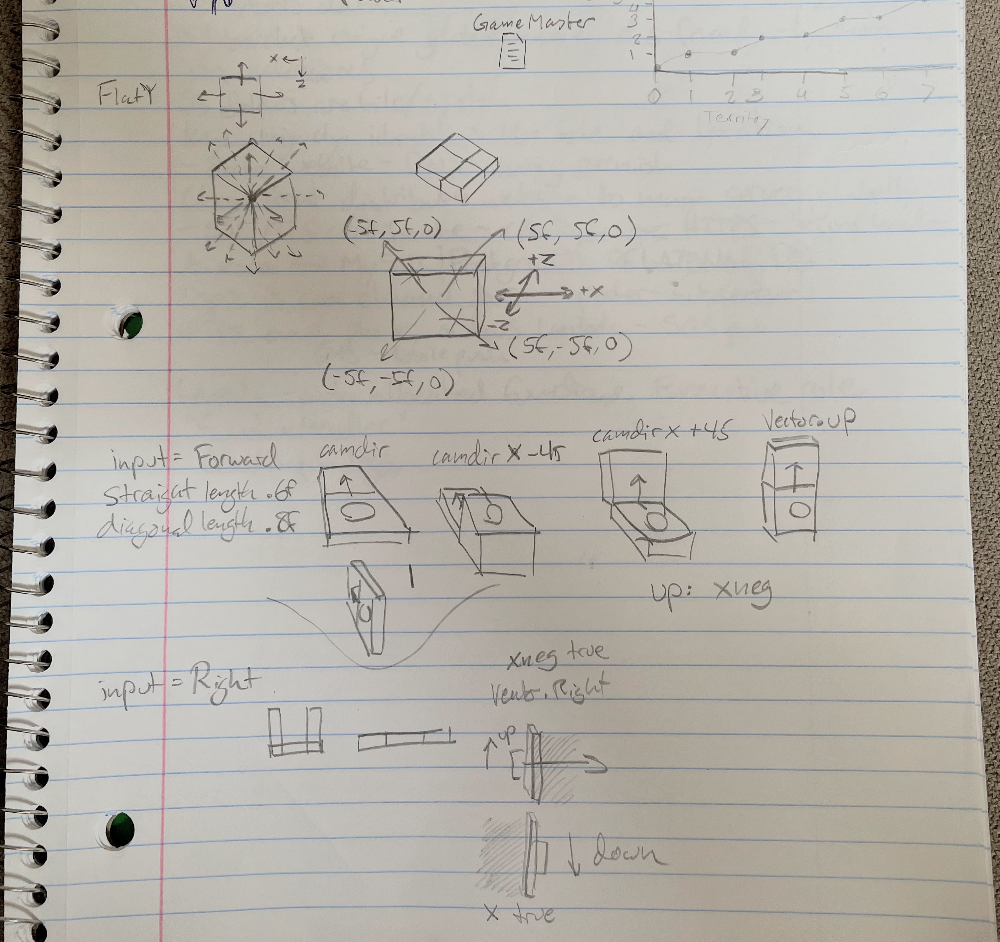
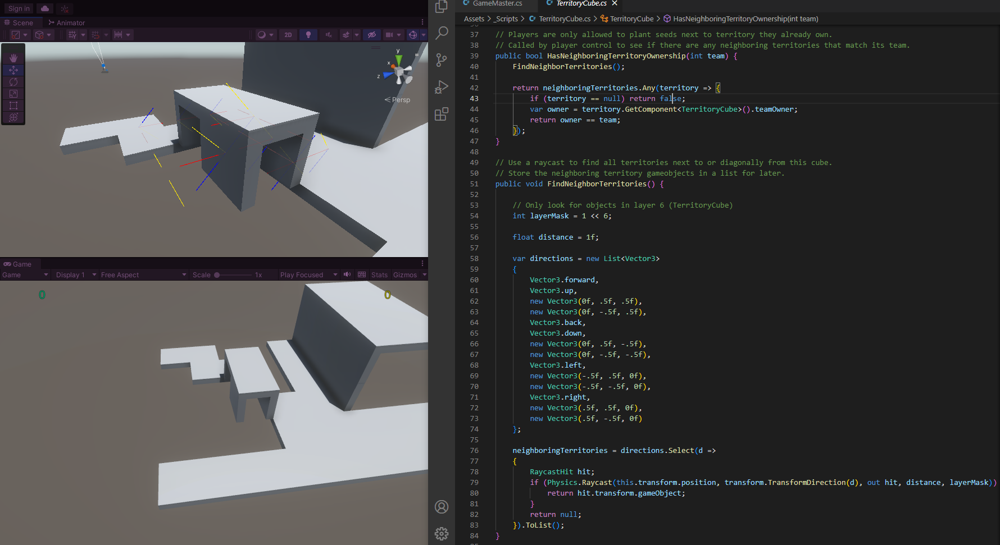
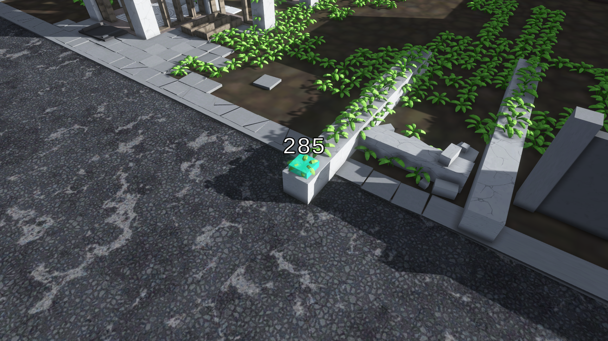
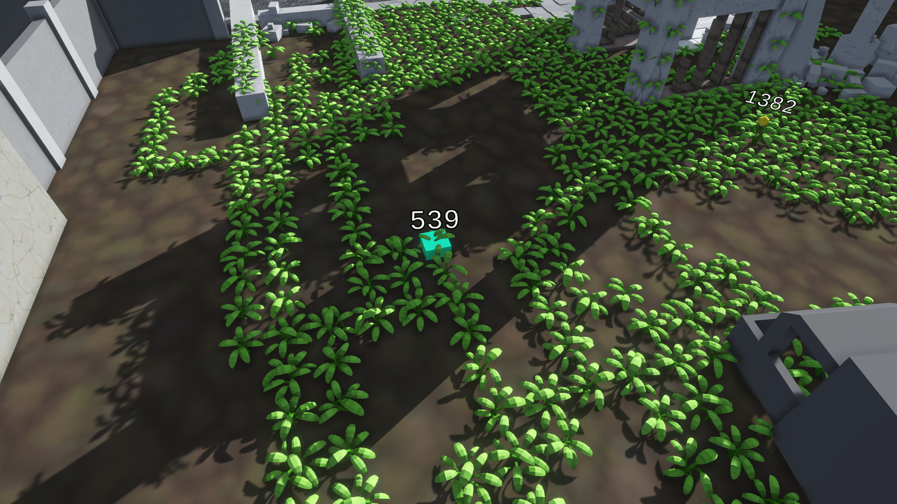
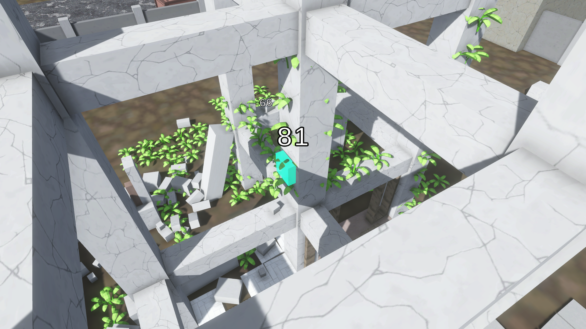

ELIAS WILLERUP


"Reclaim" is a game I made for the GIMM Jam, a 14 day individual game jam where the theme was "Overgrown."
Desperate to work on something other than school I signed up fast upon hearing its announcement. I envisioned a game about planting weeds in an abandoned city, taking over old concrete ruins and turning it into a jungle.
I have a recent enthusiasm for couch splitscreen multiplayer games, and so I wanted to make a Risk-style territory takeover game where two or more players compete to cover a city block with their plant. Unlike Risk though, it would be in real-time, hopefully encouraging some competition and chaos at the play session.
I decided to go with a voxel-like grid map. I like the asymmetry and odd territory shapes of Risk, but for the two-week scope I decided to keep it simple. The player would be able to plant on the ground of course, but I envisioned the player planting on many surfances, including walls and ceilings. This would add a 3D twist to the traditional 2D map.
I seperated the map into tiles and let the player jump from one to the next. Writing a script that took in the player's desired direction, camera direction, nearby tiles, and more turned out to be the most cumbersome task of the project, challenging my Vector3 and C# skills.
I wanted to make the game playable with controller. Using a cursor to click on tiles was out of the picture. This meant making a tile highlighter that can be moved in 4 directions, good for keyboard and controllers.
One problem I ran into was the program couldn't tell whether the camera was facing away from a wall or towards it. The tiles don't know if they are walls or floors or ceilings. Plus, a tile could be either a floor or a ceiling (like a suspended platform or bridge). I didn't want to have to check a bool on each and every tile to define their state, so I hacked this by shooting a raycast from the tile when the player moves that looks for nearby tiles and figures out whether its a wall/ceiling/whatever.
If any fellow rookies out there want advice about attempting 3D tile maps: write out every possible scenario the player might be in and program for that. Make it easily expandable and automatic so making maps isn't tedious.
With a week left on the jam the scope creep settled in. I knew I wouldn't be able to make a two-player game out of my engine in that little time, so it was time to chop off some limbs, so to speak.
When testing my game I had some fun just turning off my brain and moving around the scene, planting plants. I decided to lean into the calming nature of the game and pivoted to a freeplay singleplayer mode where the player could do whatever they wanted. I kept the "master plant," which the player must visit to pick up seeds. I added an audio atmosphere and made some relaxing music which plays every few minutes.
In this state, I submitted the game a day early.
Overall my game jam had some bumps but I was able to find solutions and make a decent prototype for the jam. There are many things I want to add, and so I will probably keep working on Reclaim in the future. Its fun to boot up every now and then which I think is a good sign.
Play Reclaim on Itch.io